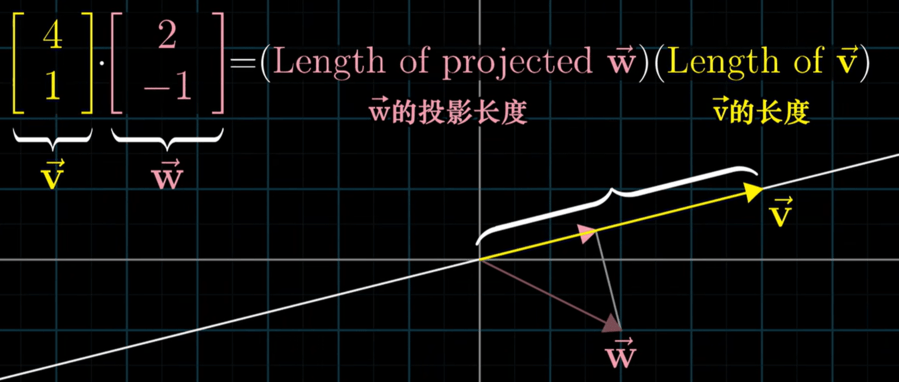
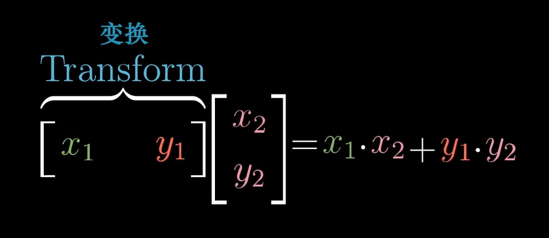
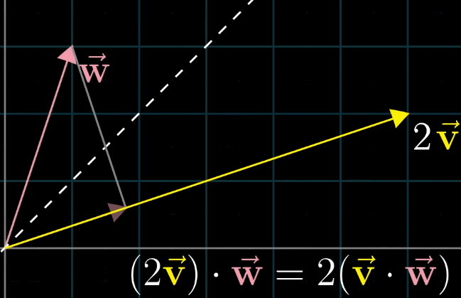
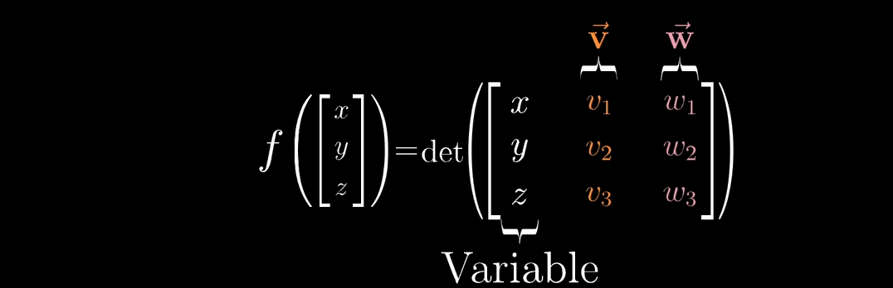
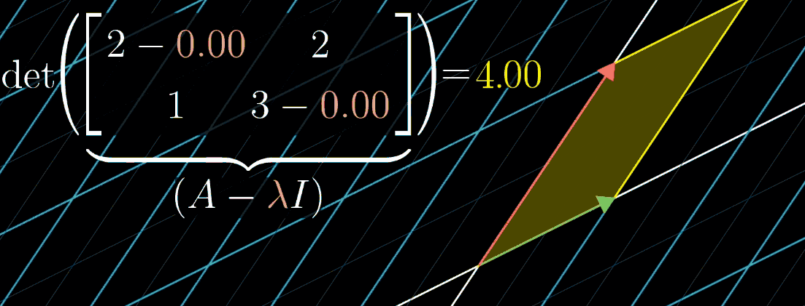

Course note: Essence of Linear Algebra, Pt.2
This blog post is Part 2 of my study notes for “The Essence of Linear Algebra.” For Part 1, see Course notes_Essence of Linear Algebra Pt1.
The main content includes: the dot product, cross product, change of basis, eigenvectors, and eigenvalues. Continuing the style of the previous post, I will explain concepts from both geometric intuition and algebraic computation perspectives wherever possible.
Part2. Dot product, Cross product, Change of Basis and Eigenvalues
1. Dot product
Basic concept
Geometric Perspective: The geometric meaning of the dot product of two vectors \(\vec{v} \cdot \vec{w}\) is: the length of the projection of \(\vec{w}\) onto \(\vec{v}\) multiplied by the length of \(\vec{v}\) (and vice versa).

Algebraic Perspective: The dot product is calculated as the sum of the products of corresponding components:
\[\vec{v} \cdot \vec{w}= v_1 w_1 + v_2 w_2 + ...\]
In two dimensions: \(\vec{v} = \begin{bmatrix} a \\ b \end{bmatrix},\ \vec{w} = \begin{bmatrix} c \\ d \end{bmatrix}\), then \(\vec{v}\cdot\vec{w}=ac+bd\)
Duality of the Dot Product:
The dot product can also be understood from the perspective of linear transformations. A row vector \(\begin{bmatrix}a & b \end{bmatrix}\) can be seen as a linear transformation from two-dimensional space to one-dimensional space. It maps any vector \(\begin{bmatrix}x \\ y\end{bmatrix}\) to \(ax+by\). The result of this transformation is exactly the dot product of the vector corresponding to that row vector and the input vector. Therefore, the geometric interpretation (projection) and the algebraic interpretation (linear transformation) of the dot product are unified.

Commutativity of the Dot Product
Geometrically, the length of the projection of \(\vec{v}\) onto \(\vec{w}\) times the length of \(\vec{w}\) is equal in value to the length of the projection of \(\vec{w}\) onto \(\vec{v}\) times the length of \(\vec{v}\) (since the lengths of the vectors and the angle between them are the same). Algebraically, it’s clearly true because \(ac+bd = ca+db\).

2. Cross product
Basic concept
Geometric Intuition: In two dimensions, the result of the cross product is a scalar (signed area).
Magnitude: Equal to the area of the parallelogram formed by \(\vec{v}\) and \(\vec{w}\) as adjacent sides.
Direction (in 3D): Perpendicular to the plane containing \(\vec{v}\) and \(\vec{w}\), determined by the right-hand rule: Point your index finger in the direction of \(\vec{v}\), your middle finger in the direction of \(\vec{w}\), and your thumb will point in the direction of \(\vec{v} \times \vec{w}\) (in a right-handed coordinate system).
Algebraic Formula:
In 2D (treating the result as a signed area):
\[\vec{v} \times \vec{w} = \det\begin{bmatrix} v_1 & w_1 \\ v_2 & w_2 \end{bmatrix} = v_1 w_2 - v_2 w_1\]
For three dimensions, the cross product results in a vector.
It can be remembered using the determinant expansion formula:
\(\vec{v} \times \vec{w} = \begin{bmatrix} v_1 \ v_2 \ v_3 \end{bmatrix} \times \begin{bmatrix} w_1 \ w_2 \ w_3 \end{bmatrix} = \det\begin{bmatrix} \vec{i} & v_1 & w_1 \\ \vec{j} & v_2 & w_2 \\ \vec{k} & v_3 & w_3 \end{bmatrix} = \vec{i}(v_2w_3 - v_3 w_2)+\vec{j}(v_1w_3 - v_3 w_1)+\vec{k}(v_1w_2 - v_2 w_1)\)
Duality of Cross product
For two fixed vectors \(\vec{v}\) and \(\vec{w}\) in three-dimensional space, if there exists a unique vector \(\vec{p} =\begin{bmatrix} p_1 \ p_2 \ p_3 \end{bmatrix}\) such that its dot product with any vector \(x=\begin{bmatrix} x \ y \ z \end{bmatrix}\) equals the determinant of the matrix formed by \(x\), \(v\), and \(w\), i.e.:
\[\begin{bmatrix} p_1 \\ p_2 \\ p_3 \end{bmatrix} \times \begin{bmatrix} x \\ y \\ z \end{bmatrix} = det(\begin{bmatrix} x & v_1 & w_1 \\ y & v_2 & w_2 \\ z & v_3 & w_3 \end{bmatrix})\]
Then this \(\vec{p}\) is defined as the cross product \(\vec{v}\times\vec{w}\) of \(\vec{v}\) and \(\vec{w}\). Geometrically, the direction of \(\vec{p}\) is perpendicular to both \(\vec{v}\) and \(\vec{w}\), and its magnitude equals the area of the parallelogram they span.

The cross product is not commutative: \(\vec{v}\times\vec{w} = -\vec{w}\times\vec{v}\)
3. Change of Basis
Basic Concept
The same abstract vector \(\vec{v}\) has different coordinate representations in different coordinate systems (i.e., with different basis vectors).
Let \(\mathcal{B} = {\vec{b}_1,\vec{b}_2}\) be a basis. Then the coordinates of vector \(\vec{v}\) in the standard basis, denoted \([x\ y]^T\), and its coordinates in basis \(\mathcal{B}\), denoted \([c_1\ c_2]^T\), satisfy: \(\vec{v}=c_1\vec{b_1}+c_2\vec{b_2}\)
We already know that a matrix represents a linear transformation. Previously, we described it as: the columns of a matrix represent the images of the transformed basis vectors. A more precise description is: the columns of a matrix represent the coordinates of the transformed basis vectors.
\[\begin{bmatrix} x \\ y \end{bmatrix} = \underbrace{\begin{bmatrix} \vec{b}_1 & \vec{b}_2 \end{bmatrix}}_{\text{Transition Matrix } P} \begin{bmatrix} c_1 \\ c_2 \end{bmatrix}\]
The matrix \(P\) is called the change of basis matrix from \(\mathcal{B}\) to the standard basis. Its columns are the coordinates of the basis vectors in \(\mathcal{B}\), expressed in the standard basis.
Linear Transformation VS. Change of Basis:
In a linear transformation, the coordinate system (basis) is fixed, and the vector itself is moved, causing its coordinates to change.
In a change of basis, the vector itself remains fixed, but the coordinate system (the observer’s perspective) changes, so the coordinate values representing the same vector change.
Important Application
If a linear transformation \(T\) has matrix \(A\) in the standard basis, and we want its representation \(B\) in another basis \(\mathcal{B}\), we have the similarity transformation relation: \(B = P^{-1}AP\)
where \(P\) is the change of basis matrix (from \(\mathcal{B}\) to the standard basis). This allows us to choose a more convenient basis to simplify the description of a transformation.
4. Eigenvalues and Eigenvectors
Basic concept
Geometric Concept: For a linear transformation \(A\), most vectors will be knocked off their span (their direction will change). However, there exist special non-zero vectors that are only stretched or compressed, and do not change direction (they may point in the exact opposite direction, which is still considered the same line). These vectors are called eigenvectors, and the corresponding stretching factor is called the eigenvalue.
\(A\vec{v} = \lambda \vec{v}\): (Matrix times vector) equals (vector times scalar)
Algebraic Derivation Process:
Introduce the identity matrix \(I\) to rewrite \(\lambda \vec{v}\) as a matrix-vector product: \(\lambda \vec{v} = \lambda I \vec{v}\)
Why the identity matrix? Because for any vector \(\vec{v}\), the identity matrix has the property \(I\vec{v} = \vec{v}\).
Rearranging the terms gives: \((A - \lambda I) \vec{v} = \vec{0}\)
The problem now becomes: find a non-zero vector \(\vec{v}\) such that its product with the matrix \((A - \lambda I)\) is the zero vector.
Recalling previous knowledge, for a non-zero vector to satisfy this, the matrix must represent a transformation that collapses dimensions (i.e., it is singular), which means its determinant is zero: \(\det(A - \lambda I) = 0\)
\((A - \lambda I)\) can be written in matrix form as: \(\begin{bmatrix} a-λ & b \\ c & d-λ \end{bmatrix}\) (where \(A = \begin{bmatrix} a & b \\ c & d\end{bmatrix}\))
Therefore, for a \(2 \times 2\) matrix, there are two eigenvalues.
Substitute the solved \(\lambda\) values back into \((A - \lambda I) \vec{v} = \vec{0}\) and solve the system of equations to find the corresponding eigenvectors. Each eigenvalue has infinitely many eigenvectors, as they all lie on the same line (the eigenspace). Usually, we take one representative direction vector.

Note: In R, the eigen() function returns one normalized eigenvector for each eigenvalue, even though the eigenspace is a one-dimensional line, it only gives one representative vector.
reference
This note is a summary of the online course Essence of Linear Algebra